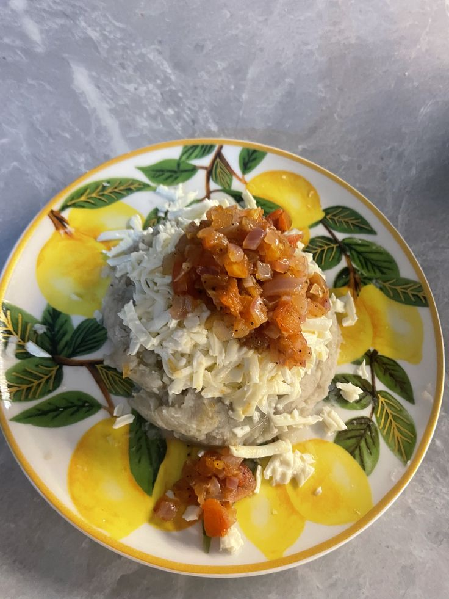
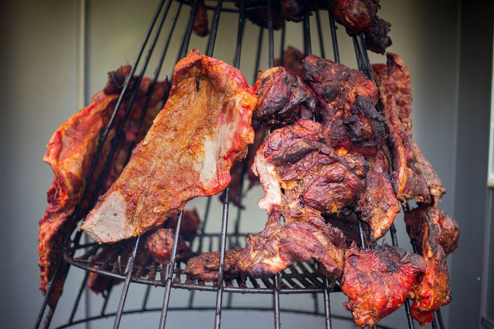
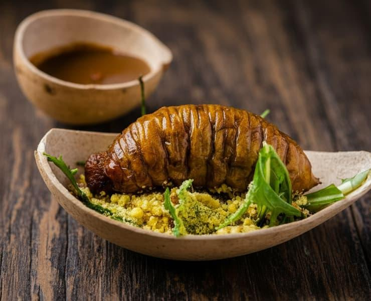
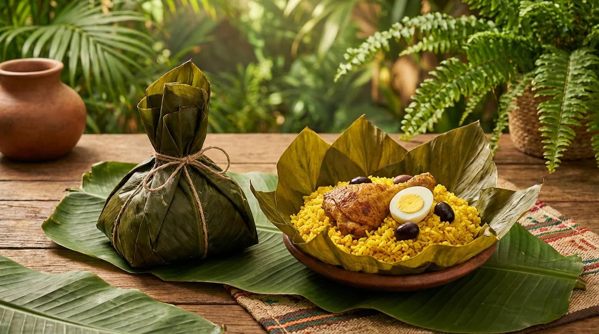
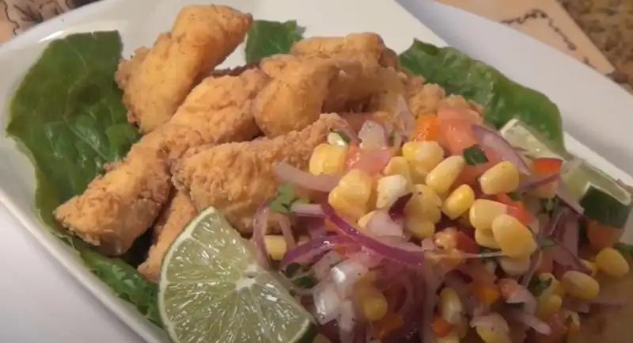
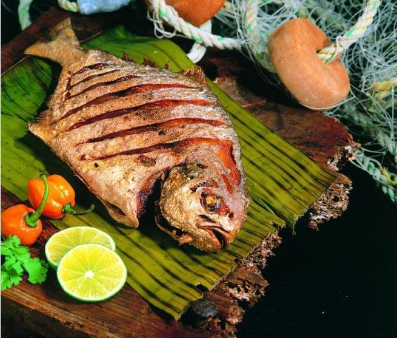
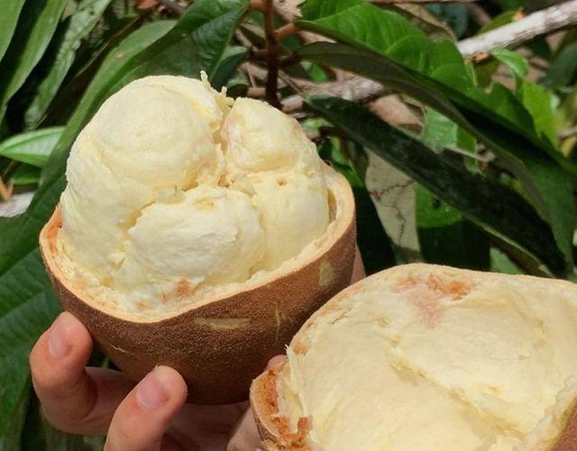

Pescado frito
Preparación tradicional de la costa, acompañada de sabores caribeños.
Descubre los sabores, ingredientes y tradiciones culinarias que representan la diversidad de Colombia. Cada región tiene una historia que contar a través de sus platos.
Explorar las regiones ↓
Un país lleno de sabores
Colombia es un país lleno de diversidad, cultura y tradición. Su gastronomía refleja la riqueza de sus territorios, sus ingredientes, sus costumbres y la creatividad de sus comunidades. Desde las costas hasta las montañas y las selvas, cada preparación conserva una parte de nuestra identidad.
La región Caribe se caracteriza por sus sabores tradicionales, pescados, mariscos, coco, maíz y preparaciones que reflejan la cultura y alegría de la costa colombiana.
Preparación tradicional de la costa, acompañada de sabores caribeños.

Preparación a base de guineo verde, tradicional del Caribe colombiano.

Sopa tradicional elaborada con guandú y otros ingredientes de la región.

Una preparación cremosa con diferentes mariscos y sabores del mar.

Fritura tradicional y emblemática de la región Caribe.

Sopa típica elaborada con ñame, queso costeño y otros ingredientes.
En la región Andina encontramos sopas, amasijos, carnes y recetas tradicionales que conservan sus sabores y costumbres.

Uno de los platos más representativos de Antioquia, con diversos ingredientes tradicionales.

Sopa espesa preparada con maíz, carnes, papa, garbanzos y otros ingredientes.

Sopa de leche, agua, huevo, cebolla larga y cilantro, tradicional del desayuno.

Preparación de cerdo relleno con arroz, arvejas y condimentos, horneado lentamente.
La gastronomía del Pacífico colombiano destaca por el uso de pescados, mariscos, coco, hierbas y productos propios de su territorio.

Pescado cubierto con una mezcla de harina y huevo, frito hasta quedar dorado.

Pescado salado preparado con guisos, hierbas, tomate y otros condimentos.

Empanadas de maíz rellenas de piangua, molusco de los manglares del Pacífico.

Preparación de mariscos con ingredientes y sabores tradicionales de la costa Pacífica.
La cocina de los Llanos Orientales está relacionada con la ganadería, los productos locales y las tradiciones de la cultura llanera.

Carne asada tradicional de los Llanos Orientales, preparada sobre brasas.

Preparación que combina carne, arroz, fríjoles y plátano.

Carne de ternera joven asada en chuzos sobre brasas.

Preparación tradicional de algunas zonas llaneras.
La gastronomía amazónica aprovecha ingredientes de la selva, frutos, pescados y conocimientos tradicionales de las comunidades indígenas y campesinas.

Larva tradicional amazónica consumida en algunas comunidades, asada o preparada de distintas formas.

Preparación de arroz condimentado con ingredientes como pollo y huevo, envuelto en hojas.

Pescado amazónico de gran tamaño que se prepara frito, asado o en guisos.

Pez de los ríos amazónicos que puede prepararse asado o en sopas tradicionales.

Fruto amazónico utilizado en jugos, helados, cremas y postres tropicales.